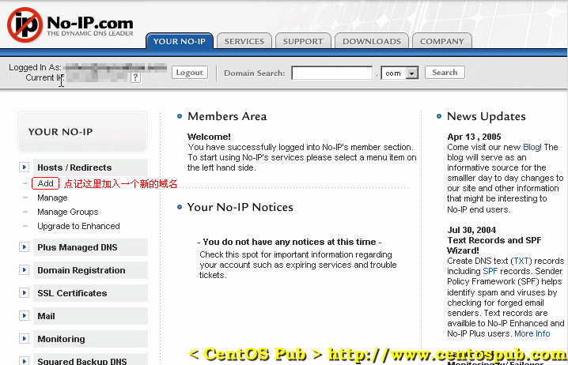
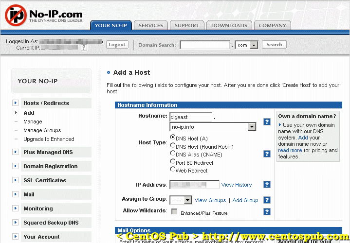
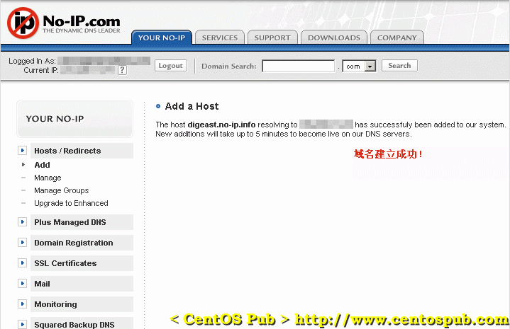

<<< 返回［配置详解］索引
< 动态域名的申请（no-ip.com） > （最近更新日：2006/08/20）
通过PPPoE方式xDSL接入网络的用户，每次获得的IP地址是变化的。我们不可能让别人用IP地址来访问我们的服务器，而且普通免费的二级域名又 无法应付服务器IP即时的变化。所以，需要申请一个动态域名，通过服务端对域名指向的实时控制，达到无论服务器IP地址怎样变化，外部用户在任何时候都能 通过此域名来正常访问服务器的目的。
在国内，有一些动态域名提供商，比如比较有代表性的 3322.org ，但功能都比较单一。在这里，我们选择人气、评价比较高的国外动态域名提供商 no-ip.com 提供的动态域名。当然，按照您的个人喜好，选择任何一个服务商提供的动态域名都能实现同样的功能，只要您知道相应服务商提供的动态域名的设置方法。
[1] 打开no-ip.com的用户申请页面
http://www.no-ip.com/newUser.php
[2] 分别填入前五项必填选项（名、姓、E-mail、密码和密码的确认）以及后面的“How did you hear about us?”（通过什么方式得知no-ip.com的）的选择，其他选项可填可不填，然后一定不要忘了在最后的是否同意协议（“I have read and agree to the following terms of service”）一栏上打勾同意协议。
[3] 这时去邮箱中查看邮件，会发现从no-ip.com发来的账户激活邮件。邮件正文中，有一个标题为“To activate your account please click the following URL:”的链接，点击这个链接，在弹出的浏览器窗口中会出现激活成功的信息。
[4] 然后到
no-ip.com 的主页上用刚刚申请的用户名和密码登录。然后会出现用户控制面板，点击左边“Hosts / Redirects”菜单中的“Add”。

[5] 在加入新域名的页面中，填入你的主机名（这里以本站的digeast为例），以及域名的形式（这里以默认的“no-ip.info”为例），“Host Type”一项选择“DNS Host (A)”，然后其他选项保持默认，点击下面的按钮“Create Host”，顺利的话，会出现加入主机成功的页面。图样如下：

域名建立成功后会出现成功建立的提示页面，如下：

以上域名申请过程，我们可以在我们的自用PC上面完成。管理域名的过程也同样能够在PC上面完成，但每次更新IP地址后都要手动通过网页来更新是没有效率的。这里介绍在服务器端对域名进行控制的方法。
[1] 以root用户登录服务器，下载no-ip域名控制工具。
[root@sample ~]# wget http://www.no-ip.com/client/linux/noip-duc-linux.tar.gz ← 下载域名控制工具
--09:13:38-- http://www.no-ip.com/client/linux/noip-duc-linux.tar.gz
=> `noip-duc-linux.tar.gz'
Resolving www.no-ip.com... 204.16.252.112
Connecting to www.no-ip.com|204.16.252.112|:80... connected.
HTTP request sent, awaiting response... 200 OK
Length: 99,421 (97K) [application/x-tar]
100%[====================================>] 99,421 98.67K/s
09:13:40 (98.42 KB/s) - `noip-duc-linux.tar.gz' saved [99421/99421]
[root@sample ~]# tar zxvf noip-duc-linux.tar.gz ← 展开被压缩tar文件 |
[2] 配置no-ip域名控制工具
[root@sample ~]# cd noip* ← 进入展开后的no-ip域名控制工具目录
[root@sample noip-2.1.3]# make ← 编译源代码
[root@sample noip-2.1.3]# make install ← 开始建立
if [ ! -d /usr/local/bin ]; then mkdir -p /usr/local/bin;fi
if [ ! -d /usr/local/etc ]; then mkdir -p /usr/local/etc;fi
cp noip2 /usr/local/bin/noip2
/usr/local/bin/noip2 -C -c /tmp/no-ip2.conf
Auto configuration for Linux client of no-ip.com.
Multiple network devices have been detected.
Please select the Internet interface from this list.
By typing the number associated with it.
0 eth0
1 ppp0
1 ← 这里选择“1”，将域名指向ppp0的IP地址
Please enter the login/email string for no-ip.com yourname@yourserver.com ← 这里填入申请域名时的邮箱
Please enter the password for user 'yourname@yourserver.com' ******** ← 这里填入域名的密码
Only one host [digeast.no-ip.info] is registered to this account.
It will be used.
Do you wish to run something at successful update?[N] (y/N) ← 直接按回车接受默认，不执行任何程序
New configuration file '/tmp/no-ip2.conf' created.
mv /tmp/no-ip2.conf /usr/local/etc/no-ip2.conf
[root@sample noip-2.1.3]# chmod 700 redhat.noip.sh ← 赋予域名工具执行脚本可执行属性
[root@sample noip-2.1.3]# cp redhat.noip.sh /usr/bin ← 复制redhat.noip.sh到/usr/bin目录 |
[3] 域名指向IP地址的更新
在重新启动系统的情况下，只要运行“redhat.noip.sh start”即可更新。
[root@sample~]# redhat.noip.sh start ← 启动no-ip工具
Starting no-ip client daemon: [ OK ] ← 启动成功 |
在重新拨号连接到网络的情况下，只要运行“redhat.noip.sh restart”即可更新。
[root@sample~]# redhat.noip.sh restart ← 启动no-ip工具
Starting no-ip client daemon: [ OK ]
Starting no-ip client daemon: [ OK ] ← 重新启动成功 |
[4] 删除安装源代码
[root@sample~]# cd ← 返回root用户根目录
[root@sample~]# rm -rf noip* ← 删除安装后遗留的源代码 |
[5] 测试动态域名配置
在下面文本框中输入域名（例如digeast.no-ip.info），然后点击“Go!”。
在测试结果页中，出现的对应的IP地址与服务器ppp0的IP地址相一致的话，说明动态域名已经成功绑定到了服务器上。（查看服务器ppp0的IP地址可通过ifconfig命令）
注：每次更新IP后，生效要等一段时间，大概不会超过2分钟。